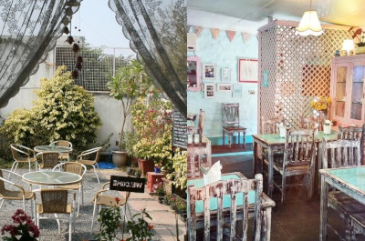
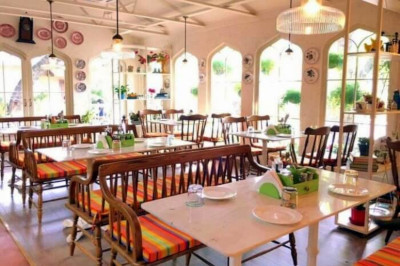
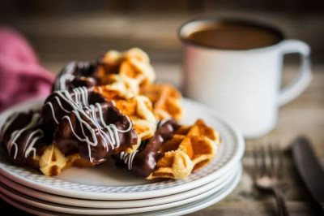
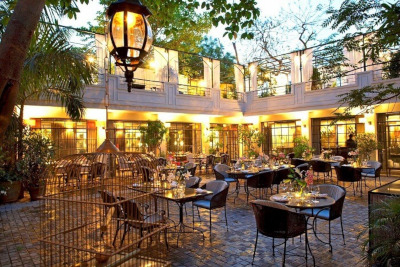
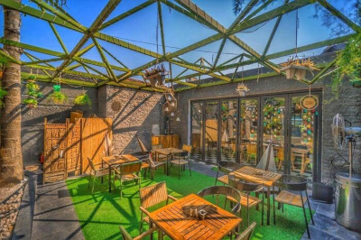

Romantic Cafes
1. Rose Cafe

One of the most dreamy cafes in TOWN, Rose Cafe overwhelms people with its oh-so-pretty ambience. The beautiful hues of pastel pink and bright blue, the ceilings donning pretty lamps, all with just the right lighting to set the mood, Rose Cafe is indisputably the best cafe in Delhi for couples. So, the next time you feel like taking your maiden out on a date she’ll never forget, this is where you should go! Don’t forget to try their heavenly espresso cake.
2. Diggin, Chanakyapuri

A gorgeous space with well-manicured french windows, lush green gardens, fancy colorful bird cages, and soothing vibes, Diggin is one of the most romantic cafes in Delhi that has taken the insta-worthy tag to a whole new level. The cafe has perfectly nailed its replication of those rustic European cafes with natural surroundings and great views. Take your girlfriend to this amazing place this Valentine’s Day in Delhi and propose her over their famed Coffee Creme Brulee.
3. Di Ghent Cafe, DLF Phase 4

A scrumptious breakfast or a good weekend brunch? Don’t worry. They got it all! Not very spacious, but the popular Di Ghent Cafe will make every moment you spend here worthwhile. Serving some of the best coffee in Delhi, Di Ghent is known for its warm, soothing environment, great location, and sophisticated ambience, that are sure to make your romantic date a huge success! From a classic range of soups, salads, and waffles, Di Ghent ensures it serves the most authentic flavours on your plate with a sober presentation and commendable taste, making it one of the best cafes in Delhi.
4. Cherie, Mehrauli

For all the lovebirds looking for an intimate time this Valentine’s Day, Cherie One Qutub is the ultimate answer. This delightful place is the best cafe in Delhi for couples who don’t mind expensive dining on a special date. Meticulously designed by the acclaimed architect Lucie Salaun, Cherie has classy interiors that will melt your bae’s heart in an instant. The soft lighting, ethnic cuisines, exotic beverages, and live musical performances are perfect to celebrate a romantic evening with your partner.
5. Soho Bistro & Cafe

One of the best cafes in South Delhi, Soho Bistro & Cafe is fast rising the ladder of gastronomical competition in the city. This profoundly beautiful, dim lit, tastefully curated place with a modern ambience makes up for an impressive crowd puller in the glam lanes of Saket. Apart from the looks, their heaven sent yummy menu too gets the public talking. Soho’s delicious international cuisine is the next big thing in Delhi that is swiftly spreading its silent charm to the foodie population of Delhi. What else does one need from the best cafes in Delhi?